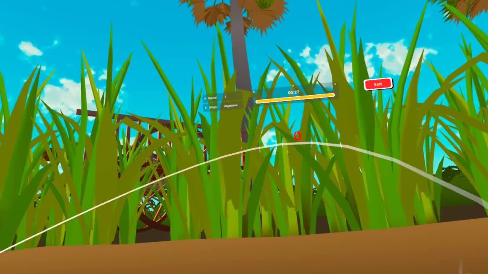
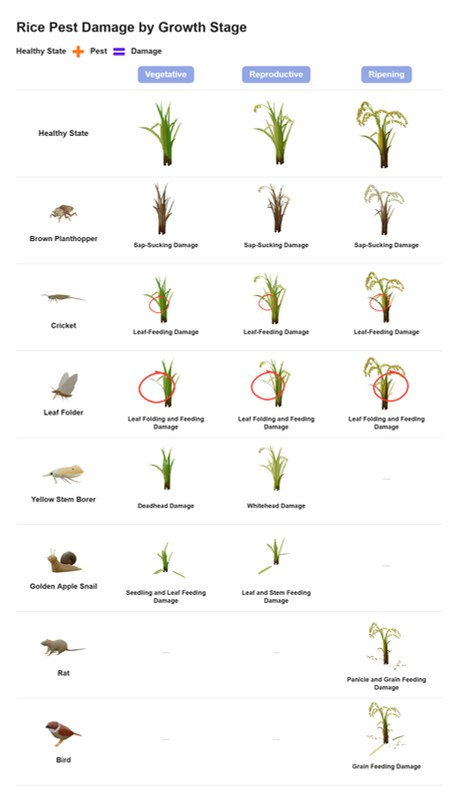
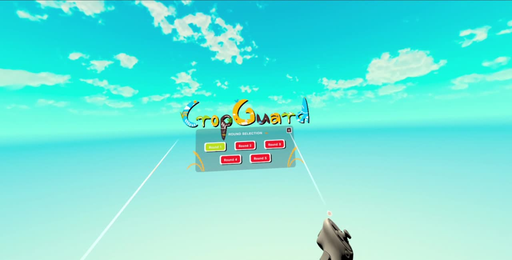

VU 1
{{t.vu1Title}}
{{t.vu1Text}}
{{t.heroBadge}}
{{t.heroLead}}

~90%
{{t.stat1}}
~70%
{{t.stat2}}
23
{{t.stat3}}
3
{{t.stat4}}
{{t.statSource}}
{{t.probLabel}}
{{t.probLead}}
{{t.vuLabel}}
{{t.vuLead}}
{{t.vu1Text}}

{{t.vu2Text}}

{{t.vu3Text}}
{{t.sessLabel}}
{{t.sessLead}}
{{t.labTitle}}
{{t.labText}}
{{t.role1Text}}
{{t.role2Text}}
{{t.role3Text}}
{{t.navImpact}}
{{t.imp1Text}}
{{t.imp2Text}}
{{t.imp3Text}}
{{t.imp4Text}}
[X]
{{t.res1}}
[X]
{{t.res2}}
[+X%]
{{t.res3}}
12
{{t.res4}}
{{t.builtWith}}